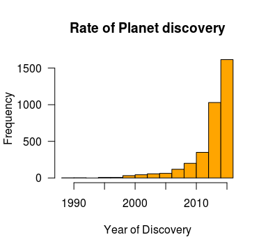

CS3250_Fall16_Project_Repo
Introducton
Exoplanets are defined as any planet orbiting a star outside of our own solar system. NASA in conjunction with Cal-Tech University monitors all the confirmed exoplanets that have been recorded and they make that information available to the public. There are 3431 planets currently in their confirmed database and it is this data that we have analyzed in order to glean some important insights about what earth like planets might be out there waiting to be discovered.
As you can see on the graph above the rate that exoplanets are being discovered has been increasing in over time. It makes sense that as technology advances discovery comes more steadily and with an increased speed. With each new discovery comes opportunity.
Tableau Graphics
Discovery Data

Earth Comparison

Full Project Proposal
To display that data can be gathered over a variety of mediums and topics we have chosen to look at data pertaining to the various documented exoplanets, or planets that have been discovered outside of our solar system. Scientists document and study these planets as a way to gain insight into our own solar system and to better understand what’s beyond our own solar system. Finding a variety of other planets in different stages of their being allow us to more accurately predict what will happen to Earth in the future but there are plenty of other interesting insights to be gained by studying exoplanets.
For our analysis of the data we will look at the names and attributes of each planet, such as their discovery date, distance from earth, mass, and so on. We also plan to analyze the relationships between different exoplanets to see what connections can be drawn between varying planet attributes. Categories will be developed and analyzed based on these and other attributes.
Data on the planets themselves will be gathered from Exoplanets.org and NASA's confirmed exoplanet archive from Caltech University which includes thousands of documented exoplanets. Though there are multiple data sets available we believe it won’t be difficult to include data from multiple sources. Both sources include data about the same planets they just focus on different attributes so we will essentially be combining both data sets without the overlap. Obviously it will take too long to gather data on all of these planets manually so the plan will be to gather a sufficient number of planets to draw conclusions from the known data. The sources for this data include planet names, overviews, bibliography, stellar information, and associated data.
The following are questions that we look to answer by looking at and interpreting this data. What sort of correlations can be drawn between the method of discovery and the physical attributes of an exoplanet? What is the historical trend of the discovery of exoplanets? Are we discovering new planets at a consistent rate or is it perhaps increasing as technology advances? What can we learn about the exoplanets after discovering them? Are potential temperate counter-parts (like Earth) becoming more common? What are the odds of the next exoplanet discovered to potentially have liquid water on its surface? How many exoplanets are or were once similar enough to earth for us to draw useful conclusions about our home? All of these questions can be explored using the exoplanet data sets.